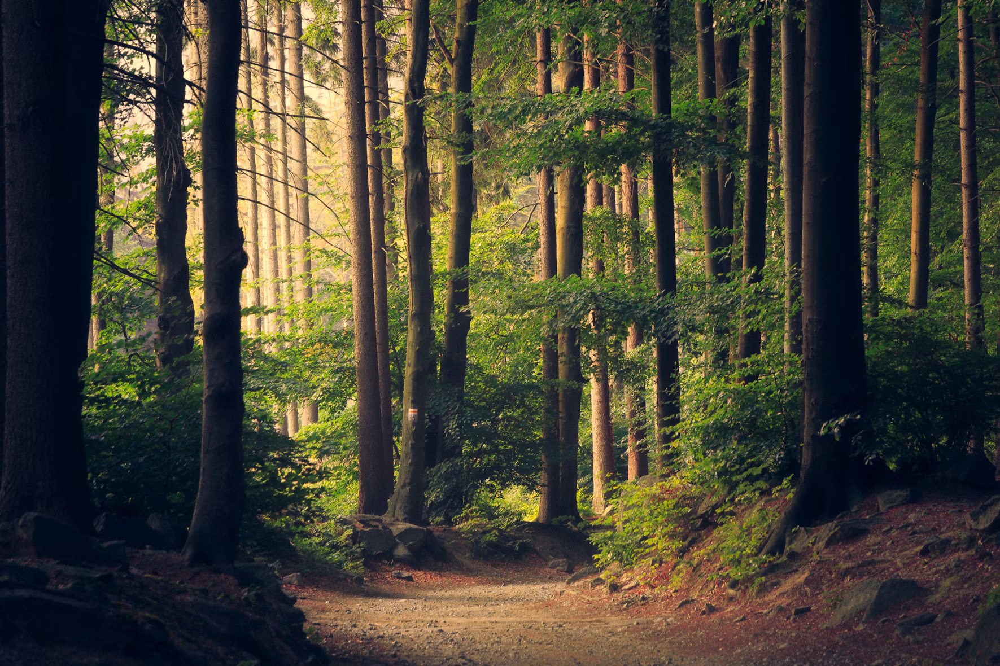

Lochquarry Outdoor Centre is set in acres of land in the heart of the majestic Argyll hills. On our doorstep is not only magnificent scenery, but also a breathtaking selection of outdoor and adventurous activities.
With activities designed to meet the needs of all ages and experiences of young people, Lochquarry truly brings adventure to everyone.